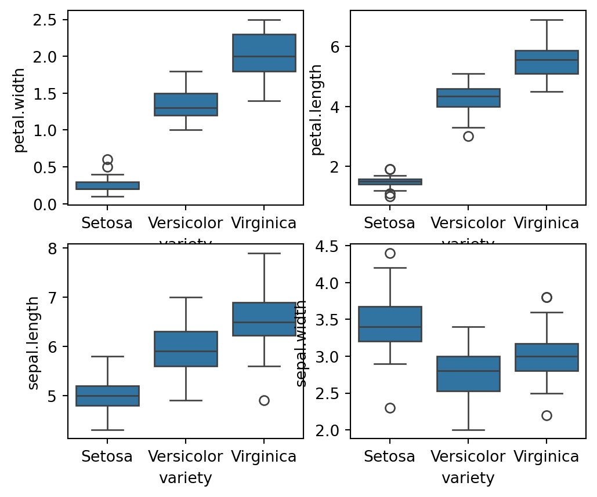
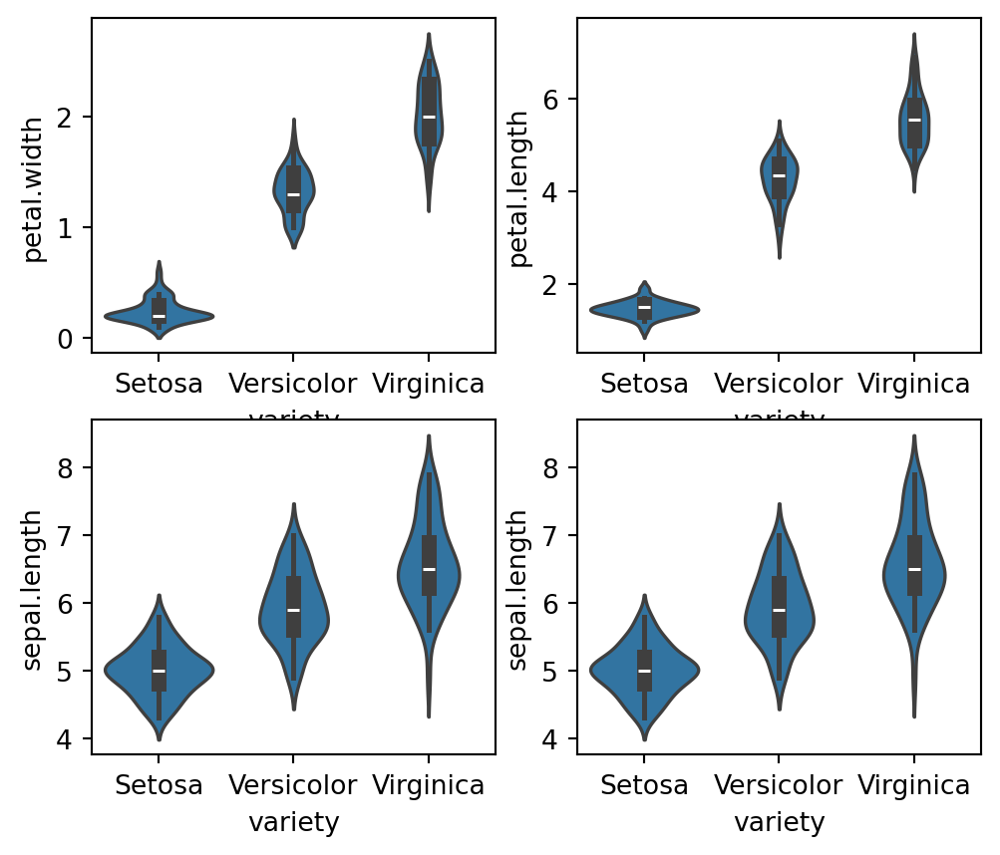
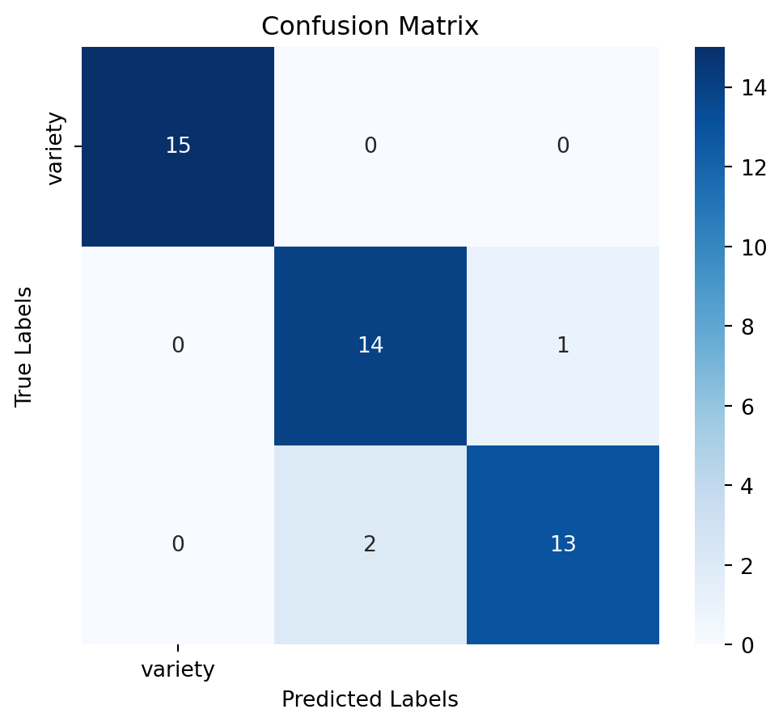
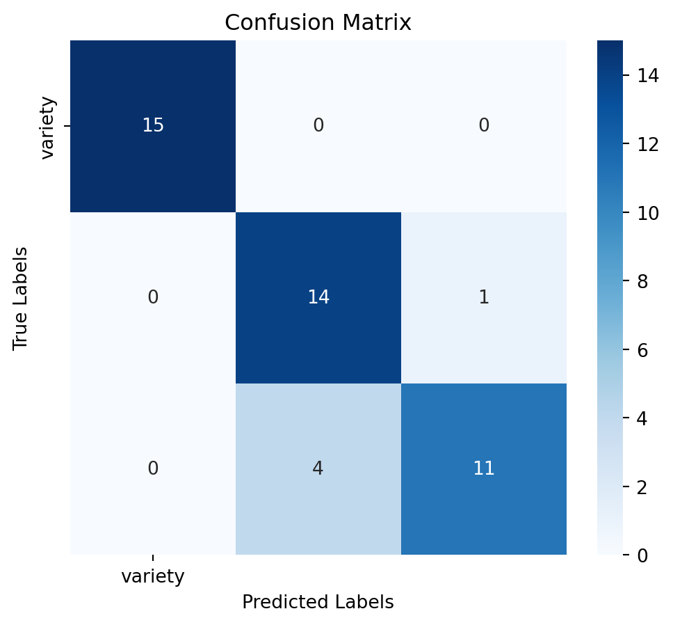

Code
# loading necessary libraries
import pandas as pd
import numpy as np
import matplotlib.pyplot as plt
import seaborn as snsIn this project we used specific versions of the libraries. Save the following libraries in a text file- requirements.txt. Install all these libraries using the code python -r pip install requirements.txt.
In this project, we will walk through an end-to-end machine learning task using the Iris dataset. This comprehensive exercise will cover all stages of a machine learning pipeline, from data exploration to model deployment.
The Iris dataset is a classic dataset in machine learning, widely used for benchmarking classification algorithms. It consists of measurements from 150 iris flowers, with four features- Sepal Length, Sepal Width, Petal Length, and Petal Width. Each sample is labeled with one of three species- Iris-setosa, Iris-versicolor, and Iris-virginica.
Our objective is to build a classification model that can accurately predict the species of an iris flower based on its measurements. We will explore the dataset, perform necessary preprocessing, and select an appropriate classification algorithm to achieve this goal
In this EDA process, libraries such as pandas, seaborn, matplotlib, and scikit-learn are essential. Pandas is used for efficient data manipulation and preprocessing, allowing us to load, clean, and manage the dataset seamlessly. Seaborn and matplotlib provide advanced visualization capabilities to explore the distribution, outliers, and relationships among features, which are crucial for understanding the dataset’s structure and potential issues. Together, these libraries offer a comprehensive toolkit for conducting thorough exploratory data analysis, ensuring that the dataset is well-understood and ready for subsequent modeling.
In the next step, we load the Iris dataset directly from a remote URL using pandas. The code iris_df = pd.read_csv(‘https://raw.githubusercontent.com/sijuswamy/Model_Deployment/main/iris.csv’) reads the CSV file from the specified GitHub repository and creates a DataFrame named iris_df, which contains the dataset for further analysis.
| sepal.length | sepal.width | petal.length | petal.width | variety | |
|---|---|---|---|---|---|
| 0 | 5.1 | 3.5 | 1.4 | 0.2 | Setosa |
| 1 | 4.9 | 3.0 | 1.4 | 0.2 | Setosa |
| 2 | 4.7 | 3.2 | 1.3 | 0.2 | Setosa |
| 3 | 4.6 | 3.1 | 1.5 | 0.2 | Setosa |
| 4 | 5.0 | 3.6 | 1.4 | 0.2 | Setosa |
| sepal.length | sepal.width | petal.length | petal.width | variety | |
|---|---|---|---|---|---|
| 145 | 6.7 | 3.0 | 5.2 | 2.3 | Virginica |
| 146 | 6.3 | 2.5 | 5.0 | 1.9 | Virginica |
| 147 | 6.5 | 3.0 | 5.2 | 2.0 | Virginica |
| 148 | 6.2 | 3.4 | 5.4 | 2.3 | Virginica |
| 149 | 5.9 | 3.0 | 5.1 | 1.8 | Virginica |
Checking the Dataset Shape: The code {python} iris_df.shape returns a tuple representing the dimensions of the iris_df DataFrame, indicating the number of rows and columns in the dataset.
Data Cleaning: We will handle any missing values and ensure the data is ready for modeling. Basic preprocessing tasks will include feature scaling and normalization. Various steps in this stage is explained below. Checking for Duplicates: The code iris_df.duplicated().sum() counts the number of duplicate rows in the iris_df DataFrame, helping identify any redundancy in the dataset that may need to be addressed.
Tip Checking for duplicates is important because duplicate rows can skew analysis, introduce bias, and affect the performance of machine learning models. By identifying and removing duplicates, we ensure that each observation is unique and that the dataset accurately represents the underlying data without redundancy.
Identifying Duplicate Rows: The code iris_df[iris_df.duplicated()] filters and displays the duplicate rows in the {python}iris_df DataFrame, allowing us to inspect and address any redundancy in the dataset by showing which rows are duplicated.
| sepal.length | sepal.width | petal.length | petal.width | variety | |
|---|---|---|---|---|---|
| 142 | 5.8 | 2.7 | 5.1 | 1.9 | Virginica |
Checking Class Distribution and Data Imbalance: The code iris_df[‘variety’].value_counts() counts the number of occurrences of each unique value in the variety column of the {python}iris_df DataFrame, providing insight into the distribution of classes and helping to identify any class imbalances in the dataset.
variety
Setosa 50
Versicolor 50
Virginica 50
Name: count, dtype: int64Caution An imbalanced dataset, where some classes are significantly underrepresented compared to others, can lead to biased model performance. It may cause the model to favor the majority class, resulting in poor predictive accuracy for the minority class and skewed evaluation metrics. Addressing class imbalance ensures that the model learns to generalize across all classes effectively, leading to more reliable and fair predictions.
Checking for Missing Values: The code iris_df.isnull().sum(axis=0) calculates the number of missing values for each column in the {python}iris_df DataFrame, helping to identify and address any gaps in the dataset that may need to be handled before analysis or modeling.
sepal.length 0
sepal.width 0
petal.length 0
petal.width 0
variety 0
dtype: int64Checking for missing values is essential because missing data can compromise the integrity of the analysis and modeling process. By identifying columns with missing values, we can take appropriate steps to handle them—such as imputation or removal—ensuring that the dataset is complete and reliable for generating accurate insights and predictions.
Statistical summary: Checking skewness, kurtosis, and correlation is essential for understanding data distribution and feature relationships. Skewness measures asymmetry; values between -0.5 and 0.5 indicate a fairly normal distribution, while values beyond this range suggest significant skewness. Kurtosis assesses the heaviness of tails; values close to 3 indicate a normal distribution, while values much higher or lower suggest the presence or absence of outliers, respectively. Correlation examines feature relationships, with values close to 1 or -1 indicating strong correlations that could lead to multicollinearity. Analyzing these metrics helps in identifying data transformation needs, managing outliers, and optimizing feature selection, ultimately improving model performance and reliability. Before performing the statistical operations, check for the categorical variables. If so remove them and apply statistical operations on that pruned dataset. The following code will do that.
# Check if 'variety' column exists in the DataFrame
if 'variety' in iris_df.columns:
removed_col = iris_df["variety"]
iris_num = iris_df.drop('variety', axis=1) # Use drop to remove the column and keep the rest
print("Successfully removed 'variety' column.")
else:
print("Column 'variety' not found in the DataFrame.")Successfully removed 'variety' column.In this section various features are analysed in more detail. Presence of outlair and normality of feature distribution will be checked before ML model building.
Boxplots for Feature Analysis: The code {python}fig, axes = plt.subplots(2, 2, figsize=(16,9)) creates a 2x2 grid of subplots with a figure size of 16x9 inches. Each {python}sns.boxplot() function call plots the distribution of a specific feature {python}(petal.width, petal.length, sepal.length, sepal.width) against the variety of the iris species. The orient='v' parameter specifies vertical boxplots. This visualization helps in comparing the distributions of different features across species, highlighting differences in feature ranges, central tendencies, and potential outliers. The plt.show() command displays all the plots.
fig, axes = plt.subplots(2, 2, figsize=(6,5))
sns.boxplot( y="petal.width", x= "variety", data=iris_df, orient='v' , ax=axes[0, 0])
sns.boxplot( y="petal.length", x= "variety", data=iris_df, orient='v' , ax=axes[0, 1])
sns.boxplot( y="sepal.length", x= "variety", data=iris_df, orient='v' , ax=axes[1, 0])
sns.boxplot( y="sepal.width", x= "variety", data=iris_df, orient='v' , ax=axes[1, 1])
plt.show()
fig, axes = plt.subplots(2, 2, figsize=(6,5))
sns.violinplot(y="petal.width", x= "variety", data=iris_df, orient='v' , ax=axes[0, 0])
sns.violinplot(y="petal.length", x= "variety", data=iris_df, orient='v' , ax=axes[0, 1])
sns.violinplot(y="sepal.length", x= "variety", data=iris_df, orient='v' , ax=axes[1, 0])
sns.violinplot(y="sepal.length", x= "variety", data=iris_df, orient='v' , ax=axes[1, 1])
plt.show()
Based on our data exploration, we will select a suitable classification model. Based on the Exploratory Data Analysis (EDA), we found that petal.length and petal.width are the most influential features for determining the variety of the Iris flower. To classify the Iris dataset, several classification models can be employed. In this discussion, we will consider Logistic Regression, K-nn, Support Vector Machine, Decision Tree and Random Forest algorithms.
1. Logistic Regression
Logistic Regression is a simple yet effective classification algorithm that models the probability of a class label based on input features. It’s suitable for binary and multiclass classification problems and works well when the relationship between features and target is approximately linear.
2. k-Nearest Neighbors (k-NN)
k-Nearest Neighbors is a non-parametric method used for classification. It works by finding the k nearest data points to a given point and assigning the class that is most common among these neighbors. It is effective for datasets where the decision boundary is non-linear.
3. Support Vector Machine (SVM)
Support Vector Machine is a powerful classification technique that works by finding the hyperplane that best separates the classes in the feature space. It is well-suited for datasets with a clear margin of separation and can handle both linear and non-linear classification tasks using kernel tricks.
4. Decision Tree
Decision Tree is a model that splits the data into subsets based on the value of input features, creating a tree-like structure of decisions. It is useful for handling both categorical and numerical data and provides a clear model interpretability.
5. Random Forest
Random Forest is an ensemble method that combines multiple decision trees to improve classification performance. It reduces overfitting and improves accuracy by averaging the predictions from multiple trees, making it robust and effective for complex datasets.
Importing Required Libraries
To perform machine learning tasks and evaluate model performance, the following libraries are imported
# random seed
seed = 42
iris_df.sample(frac=1, random_state=seed)
# selecting features and target data
X = iris_df[['sepal.length', 'sepal.width', 'petal.length', 'petal.width']]
y = iris_df[['variety']]
# split data into train and test sets
# 70% training and 30% test
X_train, X_test, y_train, y_test = train_test_split(
X, y, test_size=0.3, random_state=seed, stratify=y)1. Logistic Regression To Train and Evaluate the Logistic Regression Model, follow these steps.
Step -1: Import Required Libraries Here we need only the LogisticRegression instance from the sklearnlibrary. This can be done as fol
Step-2: Initialize the Model
Create an instance of the Logistic Regression model:
Step-3” 3. Train the Model
Fit the model to the training data:
LogisticRegression(max_iter=200)In a Jupyter environment, please rerun this cell to show the HTML representation or trust the notebook.
LogisticRegression(max_iter=200)
Step-4: Make Predictions
Use the trained model to predict the labels for the test set:
Step-5 Evaluate the Model
Assess the model’s performance using confussion matrix, model accuracy and a detailed classification report:

Accuracy: 0.93
Classification Report:
precision recall f1-score support
Setosa 1.00 1.00 1.00 15
Versicolor 0.88 0.93 0.90 15
Virginica 0.93 0.87 0.90 15
accuracy 0.93 45
macro avg 0.93 0.93 0.93 45
weighted avg 0.93 0.93 0.93 45
5. RandonForest Classifier To Train and Evaluate the RandomForest Model, follow these steps.
Step -1: Import Required Libraries Here we need only the Random Forest instance from the sklearn library. This can be done as follows.
Step-2: Initialize the Model
Create an instance of the RandomForest model:
Step-3: Train the Model
Fit the model to the training data:
RandomForestClassifier(random_state=42)In a Jupyter environment, please rerun this cell to show the HTML representation or trust the notebook.
RandomForestClassifier(random_state=42)
Step-4: Make Predictions
Use the trained model to predict the labels for the test set:
Step-5: Evaluate the Model
Assess the model’s performance using confussion matrix, model accuracy and a detailed classification report:

Accuracy: 0.89
Classification Report:
precision recall f1-score support
Setosa 1.00 1.00 1.00 15
Versicolor 0.78 0.93 0.85 15
Virginica 0.92 0.73 0.81 15
accuracy 0.89 45
macro avg 0.90 0.89 0.89 45
weighted avg 0.90 0.89 0.89 45
5. Model Selection After training the model, we will evaluate its performance using various metrics such as accuracy and classification report. This will help us understand how well the model is performing and whether any improvements are needed. In this context, the RandomForestClassifier model is the winner. So we will select and save this model for deployment.